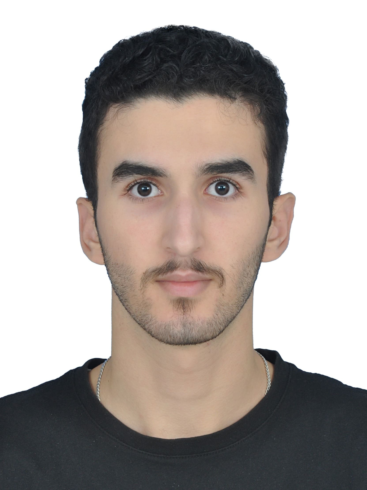

Marwane Oufrid
I'm Marwane Oufrid, an aerospace engineering researcher working on propulsion, aerodynamics, spacecraft systems, and computational methods. Explore my selected research and engineering projects below.

Add your ID photograph as assets/profile.jpg
Research & engineering projects
Technical explorations spanning propulsion, mission analysis, and spacecraft communications.

Atmosphere-Breathing Electric Propulsion
Exploring cryogenic atmospheric collection and conditioning for a 3U CubeSat in VLEO.
View project ↗
Satellite Ground Station Development
Ground station system development involving VHF, UHF, and S-band communications.
View project ↗
Lambert Problem Implementation
Team MATLAB project on Lambert transfers, minimum-ΔV optimization, and J2-perturbed orbital trajectories.
View project ↗
CFD Analysis of NACA 2412 Airfoil
Mesh development, grid-convergence verification, aerodynamic polars, and stall prediction using Gmsh, SU2, and ParaView.
View project ↗Attitude Control for Earth Observation CubeSats
Bachelor's thesis on nonlinear model predictive control for nadir pointing, ground-target tracking, and reaction-wheel fault tolerance.
View project ↗
Supersonic Inlet Isolator CFD
STAR-CCM+ study of supersonic inlet flow at Mach 2, 2.41, and 3, including shock interactions and comparison with published observations.
View project ↗